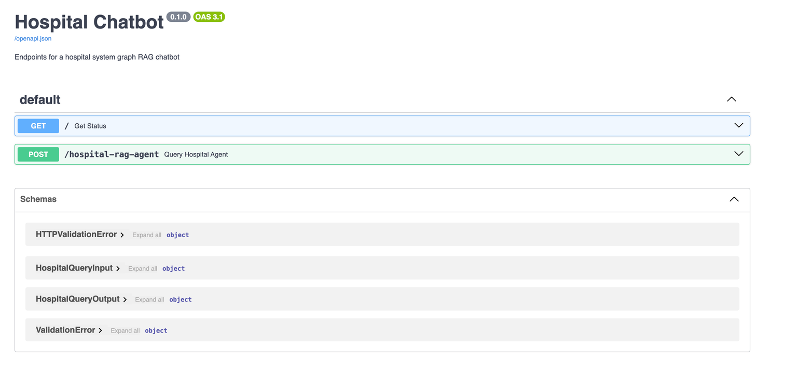

Serve the Agent With FastAPI
FastAPI is a modern, high-performance web framework for building APIs with Python based on standard type hints. It comes with a lot of great features including development speed, runtime speed, and great community support, making it a great choice for serving your chatbot agent.
You’ll serve your agent through a POST request, so the first step is to define what data you expect to get in the request body and what data the request returns. FastAPI does this with Pydantic:
from pydantic import BaseModel
class HospitalQueryInput(BaseModel):
text: str
class HospitalQueryOutput(BaseModel):
input: str
output: str
intermediate_steps: list[str]
In this script, you define Pydantic models HospitalQueryInput and HospitalQueryOutput. HospitalQueryInput is used to verify that the POST request body includes a text field, representing the query your chatbot responds to. HospitalQueryOutput verifies the response body sent back to your user includes input, output, and intermediate_step fields.
One great feature of FastAPI is its asynchronous serving capabilities. Because your agent calls OpenAI models hosted on an external server, there will always be latency while your agent waits for a response. This is a perfect opportunity for you to use asynchronous programming.
Instead of waiting for OpenAI to respond to each of your agent’s requests, you can have your agent make multiple requests in a row and store the responses as they’re received. This will save you a lot of time if you have multiple queries you need your agent to respond to.
As discussed previously, there can sometimes be intermittent connection issues with Neo4j that are usually resolved by establishing a new connection. Because of this, you’ll want to implement retry logic that works for asynchronous functions:
import asyncio
def async_retry(max_retries: int=3, delay: int=1):
def decorator(func):
async def wrapper(*args, **kwargs):
for attempt in range(1, max_retries + 1):
try:
result = await func(*args, **kwargs)
return result
except Exception as e:
print(f"Attempt {attempt} failed: {str(e)}")
await asyncio.sleep(delay)
raise ValueError(f"Failed after {max_retries} attempts")
return wrapper
return decorator
Don’t worry about the details of @async_retry. All you need to know is that it will retry an asynchronous function if it fails. You’ll see where this is used next.
The driving logic for your chatbot API is in chatbot_api/src/main.py:
from fastapi import FastAPI
from agents.hospital_rag_agent import hospital_rag_agent_executor
from models.hospital_rag_query import HospitalQueryInput, HospitalQueryOutput
from utils.async_utils import async_retry
app = FastAPI(
title="Hospital Chatbot",
description="Endpoints for a hospital system graph RAG chatbot",
)
@async_retry(max_retries=10, delay=1)
async def invoke_agent_with_retry(query: str):
"""Retry the agent if a tool fails to run.
This can help when there are intermittent connection issues
to external APIs.
"""
return await hospital_rag_agent_executor.ainvoke({"input": query})
@app.get("/")
async def get_status():
return {"status": "running"}
@app.post("/hospital-rag-agent")
async def query_hospital_agent(query: HospitalQueryInput) -> HospitalQueryOutput:
query_response = await invoke_agent_with_retry(query.text)
query_response["intermediate_steps"] = [
str(s) for s in query_response["intermediate_steps"]
]
return query_response
You import FastAPI, your agent executor, the Pydantic models you created for the POST request, and @async_retry. Then you instantiate a FastAPI object and define invoke_agent_with_retry(), a function that runs your agent asynchronously. The @async_retry decorator above invoke_agent_with_retry() ensures the function will be retried ten times with a delay of one second before failing.
Lastly, you define query_hospital_agent() which serves POST requests to your agent at /hospital-rag-agent. This function extracts the text field from the request body, passes it to the agent, and returns the agent’s response to the user.
You’ll serve this API with Docker and you’ll want to define the following entrypoint file to run inside the container:
#!/bin/bash
# Run any setup steps or pre-processing tasks here
echo "Starting hospital RAG FastAPI service..."
# Start the main application
uvicorn main:app --host 0.0.0.0 --port 8000
The command uvicorn main:app --host 0.0.0.0 --port 8000 runs the FastAPI application at port 8000 on your machine. The driving Dockerfile for your FastAPI app looks like this:
# chatbot_api/Dockerfile
FROM python:3.12-slim
WORKDIR /app
COPY ./src/ /app
COPY ./pyproject.toml /code/pyproject.toml
RUN pip install /code/.
EXPOSE 8000
CMD ["sh", "entrypoint.sh"]
This Dockerfile tells your container to use the python:3.12-slim distribution, copy the contents from chatbot_api/src/ into the /app directory within the container, install the dependencies from pyproject.toml, and run entrypoint.sh.
The last thing you’ll need to do is update the docker-compose.yml file to include your FastAPI container:
version: '3'
services:
hospital_neo4j_etl:
build:
context: ./hospital_neo4j_etl
env_file:
- .env
chatbot_api:
build:
context: ./chatbot_api
env_file:
- .env
depends_on:
- hospital_neo4j_etl
ports:
- "8000:8000"
Here you add the chatbot_api service which is derived from the Dockerfile in ./chatbot_api. It depends on hospital_neo4j_etl and will run on port 8000.
To run the API, along with the ETL you build earlier, open a terminal and run:
docker-compose up --build
If everything runs successfully, you’ll see a screen similar to the following at http://localhost:8000/docs#/: 
You can use the docs page to test the hospital-rag-agent endpoint, but you won’t be able to make asynchronous requests here. To see how your endpoint handles asynchronous requests, you can test it with a library like httpx.
Note: You need to install httpx into your virtual environment before running the tests below.
To see how much time asynchronous requests save you, start by establishing a benchmark using synchronous requests. Create the following script:
import asyncio
import time
import httpx
CHATBOT_URL = "http://localhost:8000/hospital-rag-agent"
async def make_async_post(url, data):
timeout = httpx.Timeout(timeout=120)
async with httpx.AsyncClient() as client:
response = await client.post(url, json=data, timeout=timeout)
return response
async def make_bulk_requests(url, data):
tasks = [make_async_post(url, payload) for payload in data]
responses = await asyncio.gather(*tasks)
outputs = [r.json()["output"] for r in responses]
return outputs
questions = [
"What is the current wait time at Wallace-Hamilton hospital?",
"Which hospital has the shortest wait time?",
"At which hospitals are patients complaining about billing and insurance issues?",
"What is the average duration in days for emergency visits?",
"What are patients saying about the nursing staff at Castaneda-Hardy?",
"What was the total billing amount charged to each payer for 2023?",
"What is the average billing amount for Medicaid visits?",
"How many patients has Dr. Ryan Brown treated?",
"Which physician has the lowest average visit duration in days?",
"How many visits are open and what is their average duration in days?",
"Have any patients complained about noise?",
"How much was billed for patient 789's stay?",
"Which physician has billed the most to cigna?",
"Which state had the largest percent increase in Medicaid visits from 2022 to 2023?",
]
request_bodies = [{"text": q} for q in questions]
start_time = time.perf_counter()
outputs = asyncio.run(make_bulk_requests(CHATBOT_URL, request_bodies))
end_time = time.perf_counter()
print(f"Run time: {end_time - start_time} seconds")
In this script, you import requests and time, define the URL to your chatbot, create a list of questions, and record the amount of time it takes to get a response to all the questions in the list. If you open a terminal and run sync_agent_requests.py, you’ll see how long it takes to answer all 14 questions:
python tests/sync_agent_requests.py
You may get slightly different results depending on your Internet speed and the availability of the chat model, but you can see this script took around 68 seconds to run. Next, you’ll get answers to the same questions asynchronously:
import asyncio
import time
import httpx
CHATBOT_URL = "http://localhost:8000/hospital-rag-agent"
async def make_async_post(url, data):
timeout = httpx.Timeout(timeout=120)
async with httpx.AsyncClient() as client:
response = await client.post(url, json=data, timeout=timeout)
return response
async def make_bulk_requests(url, data):
tasks = [make_async_post(url, payload) for payload in data]
responses = await asyncio.gather(*tasks)
outputs = [r.json()["output"] for r in responses]
return outputs
questions = [
"What is the current wait time at Wallace-Hamilton hospital?",
"Which hospital has the shortest wait time?",
"At which hospitals are patients complaining about billing and insurance issues?",
"What is the average duration in days for emergency visits?",
"What are patients saying about the nursing staff at Castaneda-Hardy?",
"What was the total billing amount charged to each payer for 2023?",
"What is the average billing amount for Medicaid visits?",
"How many patients has Dr. Ryan Brown treated?",
"Which physician has the lowest average visit duration in days?",
"How many visits are open and what is their average duration in days?",
"Have any patients complained about noise?",
"How much was billed for patient 789's stay?",
"Which physician has billed the most to cigna?",
"Which state had the largest percent increase in Medicaid visits from 2022 to 2023?",
]
request_bodies = [{"text": q} for q in questions]
start_time = time.perf_counter()
outputs = asyncio.run(make_bulk_requests(CHATBOT_URL, request_bodies))
end_time = time.perf_counter()
print(f"Run time: {end_time - start_time} seconds")
In async_agent_requests.py, you make the same request you did in sync_agent_requests.py, except now you use httpx to make the requests asynchronously. Here are the results:
python tests/async_agent_requests.py
Again, the exact time this takes to run may vary for you, but you can see making 14 requests asynchronously was roughly four times faster. Deploying your agent asynchronously allows you to scale to a high-request volume without having to increase your infrastructure demands. While there are always exceptions, serving REST endpoints asynchronously is usually a good idea when your code makes network-bound requests.
With this FastAPI endpoint functioning, you’ve made your agent accessible to anyone who can access the endpoint. This is great for integrating your agent into chatbot UIs, which is what you’ll do next with Streamlit.